令和元年度（R1）計算問題
測量士補試験の計算問題 13 問。紙と鉛筆で解いてから「答えと解説」を開いてください。関数の値は試験の巻末の関数表を使います。
No.3数学
次のa及びbの各問の答えの組合せとして最も適当なものはどれか。次の中から選べ。
ただし，円周率π＝3.142とする。
なお，関数の値が必要な場合は，巻末の関数表を使用すること。
a．0.81［rad］（ラジアン）を度分に換算すると幾らか。
b．頂点Ａ，Ｂ，Ｃを順に線分で結んだ三角形ABCで辺BC＝6.00 m，∠BAC＝110°，∠ABC＝35°としたとき，辺ACの長さは幾らか。
- a=46°24′／b=3.66 m
- a=46°24′／b=5.23 m
- a=46°40′／b=5.23 m
- a=46°40′／b=3.66 m
- a=92°49′／b=5.23 m
答えと解説
答え 1
a 0.81 ラジアンを度分に π ラジアンが 180° なので、ラジアンに 180 ÷ π を掛けます。
0.40° を分に直します（1° ＝ 60′）。
b 三角形の辺 AC 辺 BC ＝ 6.00 m、∠BAC ＝ 110°、∠ABC ＝ 35° です。
正弦定理は「辺 ÷ sin（その辺の向かいの角）」がどの辺でも同じ、という決まりです。関数表は 90° までなので、sin 110° は sin (180° − 110°) ＝ sin 70° で引きます。
AC ＝ 6.00 × sin 35° ÷ sin 70° ＝ 6.00 × 0.57358 ÷ 0.93969
＝ 3.44148 ÷ 0.93969 ≒ 3.66 m
No.6多角
平面直角座標系（平成14年国土交通省告示第9号）において，点Bは，点Aからの方向角が198°00′00″，平面距離が1,200.00 mの位置にある。点Ａの座標値を，X＝－1,000.00 m，Y＝＋500.00 mとする場合，点Ｂの座標値は幾らか。最も近いものを次の中から選べ。
なお，関数の値が必要な場合は，巻末の関数表を使用すること。
- X＝－1,370.82 m，Y＝－641.17 m
- X＝－1,370.82 m，Y＝－641.27 m
- X＝－1,370.82 m，Y＝－641.37 m
- X＝－2,141.27 m，Y＝＋129.18 m
- X＝－2,141.27 m，Y＝＋129.28 m
答えと解説
答え 4
方向角は、北（X）から右回りに測った角です。198° は真南（180°）から 18° だけ回りすぎた向き、つまり南から西（左）へ 18° 傾いた左下向きです。だから X も Y も減ります（−）。
X の変化 ＝ −1,200 × cos 18° ＝ −1,200 × 0.95106 ≒ −1,141.27 m
Y の変化 ＝ −1,200 × sin 18° ＝ −1,200 × 0.30902 ≒ −370.82 m
YB ＝ 500.00 − 370.82 ＝ ＋129.18 m
No.7多角
図７に示すように，平たんな土地に点Ａ，Ｂ，Ｃを一直線上に設けて，各点におけるトータルステーションの器械高と反射鏡高を同一にして距離測定を行った結果，器械定数と反射鏡定数の補正前の測定距離は，表７のとおりである。表７の測定距離に，器械定数と反射鏡定数を補正したAC間の距離は幾らか。最も近いものを次の中から選べ。
ただし，測定距離は気象補正済みとする。また，測定誤差は考えないものとする。
なお，関数の値が必要な場合は，巻末の関数表を使用すること。
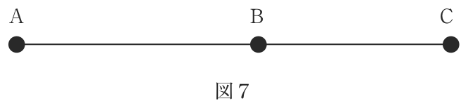
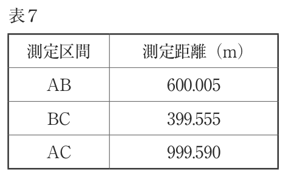
- 999.560 m
- 999.570 m
- 999.590 m
- 999.610 m
- 999.620 m
答えと解説
答え 5
器械（TS）と反射鏡には、それぞれ決まったずれ（器械定数と反射鏡定数）があり、距離を 1 回測るごとに同じ量だけずれます。2 つを合わせた補正量を K とすると、本当の距離は「測った値 ＋ K」です。
A・B・C は一直線なので、本当の距離では AB ＋ BC ＝ AC になります。
999.560 ＋ 2K ＝ 999.590 ＋ K
K ＝ 999.590 − 999.560 ＝ 0.030 m
No.12水準
レベルの視準線を点検するために，図12に示すレベルの位置Ａ及びＢにて観測を行い，表12の結果を得た。この結果からレベルの視準線を調整するとき，レベルの位置Ｂにおいて標尺Ⅱの読定値を幾らに調整すればよいか。最も近いものを次の中から選べ。
ただし，読定誤差は考えないものとする。
なお，関数の値が必要な場合は，巻末の関数表を使用すること。
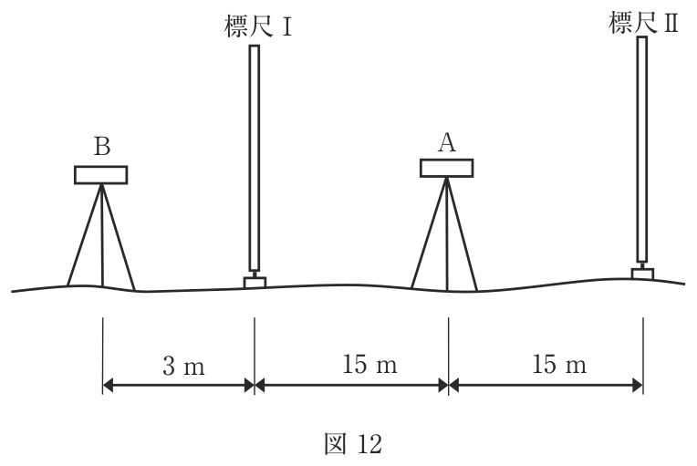
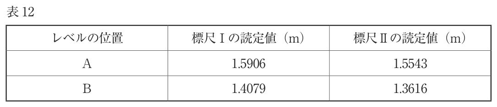
- 1.3626 m
- 1.3716 m
- 1.3726 m
- 1.3979 m
- 1.4079 m
答えと解説
答え 3
A は 2 本の標尺のちょうど中央なので、視準線が傾いていても 2 本とも同じだけ読みがずれ、差は正しい値になります。B では標尺までの距離がちがうので、差にずれが出ます。
B での差 標尺Ⅱ − 標尺Ⅰ ＝ 1.3616 − 1.4079 ＝ −0.0463 m
ずれ ＝ −0.0463 − (−0.0363) ＝ −0.0100 m
B では標尺Ⅱを小さく読みすぎています。この 0.0100 m は、B から標尺Ⅰ（3 m）と標尺Ⅱ（33 m）の距離の差 30 m で出たずれです。
ずれは距離に比例するので、33 m 先の標尺Ⅱの読みのずれは
標尺Ⅱを小さく読みすぎているので、その分を足します。
No.13水準
図13に示すように，既知点A，B及びCから新点Pの標高を求めるために水準測量を実施し，表13－1の観測結果を得た。新点Pの標高の最確値は幾らか。最も近いものを次の中から選べ。
ただし，既知点の標高は表13－2のとおりとする。
なお，関数の値が必要な場合は，巻末の関数表を使用すること。
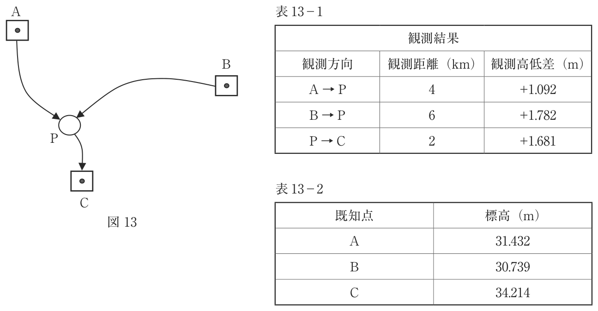
- 32.523 m
- 32.524 m
- 32.526 m
- 32.528 m
- 32.530 m
答えと解説
答え 4
3 つの既知点から、それぞれ P の標高を出します。高低差は「矢印の先が、矢印の元より何 m 高いか」です。P→C は P から C へ上がる量なので、C から P を出すときは引きます。
B から 30.739 ＋ 1.782 ＝ 32.521 m
C から 34.214 − 1.681 ＝ 32.533 m
水準測量は距離が短いほど正確なので、重さ（どれくらい信用するか）を距離に反比例させて平均します。最確値は、こうして出した「いちばん本当らしい値」です。
32.521 m より上の分だけ（mm で）平均すると、3、0、12 なので
最確値 ＝ 32.521 ＋ 0.007 ＝ 32.528 m
No.14地形
トータルステーションを用いた縮尺1/1,000の地形図作成において，傾斜が一定な斜面上の点Ａと点Ｂの標高を測定したところ，点Ａの標高が103.8 m，点Ｂの標高が95.3 mであった。また，点Ａ，Ｂ間の水平距離は70 mであった。このとき，点Ａ，Ｂ間を結ぶ直線とこれを横断する標高100 mの等高線との交点は，地形図上で点Ａから何cmの地点か。最も近いものを次の中から選べ。
なお，関数の値が必要な場合は，巻末の関数表を使用すること。
- 3.1 cm
- 3.9 cm
- 5.7 cm
- 6.4 cm
- 6.7 cm
答えと解説
答え 1
A から B まで一定の傾きで下るので、水平距離は標高差に比例します。
A と交点の標高差 ＝ 103.8 − 100 ＝ 3.8 m
A→交点の水平距離 ＝ 70 × 3.8 ÷ 8.5 ＝ 266 ÷ 8.5 ≒ 31.3 m
縮尺 1/1,000 では、実際の 1 m が地図上の 1 mm なので、31.3 m は 31.3 mm ≒ 3.1 cm。
No.15地形
細部測量において，基準点Ａにトータルステーションを整置し，点Ｂを観測したときに2′00″の方向誤差があった場合，点Ｂの水平位置の誤差は幾らか。最も近いものを次の中から選べ。
ただし，点Ａ，Ｂ間の水平距離は96 m，角度１ラジアンは，（2×10⁵）″とする。
また，距離測定と角度測定は互いに影響を与えないものとし，その他の誤差は考えないものとする。
なお，関数の値が必要な場合は，巻末の関数表を使用すること。
- 48 mm
- 52 mm
- 58 mm
- 64 mm
- 72 mm
答えと解説
答え 3
1 ラジアンは、弧の長さが半径と同じになる角です。なので「半径 × 角（ラジアン）＝ 弧の長さ」で、小さな角なら弧の長さがそのまま B の位置のずれです。
120″ をラジアンに直す 120 ÷ (2 × 10⁵) ＝ 120 ÷ 200,000 ＝ 0.0006
No.17写真
数値地形モデル（以下「DTM」という。）の標高値の点検を，現地で計測した標高値との比較により実施したい。標高値の精度を点検するための値σを表17に示す５地点における現地で計測した標高値とDTMの標高値から算出し，最も近いものを次の中から選べ。
ただし，σは，計測地点の数をN個とした場合，現地で計測した標高値とDTMの標高値との差を用いて式17で求めることとする。
なお，関数の値が必要な場合は，巻末の関数表を使用すること。
σ＝√{（（地点１の標高値の差）²＋（地点２の標高値の差）²＋…＋（地点Nの標高値の差）²）／N} ……式17
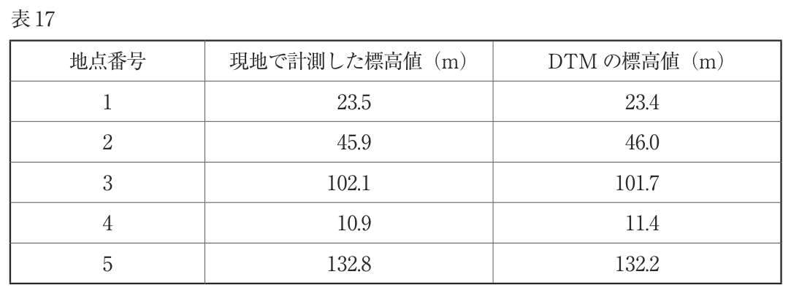
- 0.18 m
- 0.32 m
- 0.40 m
- 0.44 m
- 0.50 m
答えと解説
答え 3
数値地形モデル（DTM）は、地面の高さを数値で持ったデータです。現地で測った標高とどれだけちがうかを地点ごとに出し、式 17 のとおり「2 乗して、足して、N で割って、√」の順に計算します。2 乗するので、差は大きさだけ出せば足ります。
地点 2 46.0 − 45.9 ＝ 0.1
地点 3 102.1 − 101.7 ＝ 0.4
地点 4 11.4 − 10.9 ＝ 0.5
地点 5 132.8 − 132.2 ＝ 0.6
5 で割る ＝ 0.79 ÷ 5 ＝ 0.158
σ ＝ √0.158
√ は、選択肢を 2 乗して比べます。
0.158 にいちばん近いのは 0.40² → σ ≒ 0.40 m
No.19写真
空中写真測量において，同一コース内での隣接写真との重複度（オーバーラップ）を80 %として平たんな土地を撮影したとき，一枚おき（例えばコースの2枚目と4枚目）の写真の重複度は何%となるか。最も近いものを次の中から選べ。
なお，関数の値が必要な場合は，巻末の関数表を使用すること。
- 36 %
- 40 %
- 50 %
- 60 %
- 64 %
答えと解説
答え 4
重複度は、1 枚の写真に写る範囲のうち、別の写真にも写っている割合です。となりの写真と 80% 重なるなら、1 枚ごとにずれるのは残りの 20% です。
2 枚目と 4 枚目の間では 2 回ずれます。重なるのは、ずれた残りです。
重なり ＝ 100 − 40 ＝ 60%
No.21地図
図21は，国土地理院刊行の電子地形図25000の一部（縮尺を変更，一部を改変）である。この図にある博物館の経緯度で最も近いものを次の中から選べ。
ただし，表21に示す数値は，図の中にある三角点の経緯度を表す。
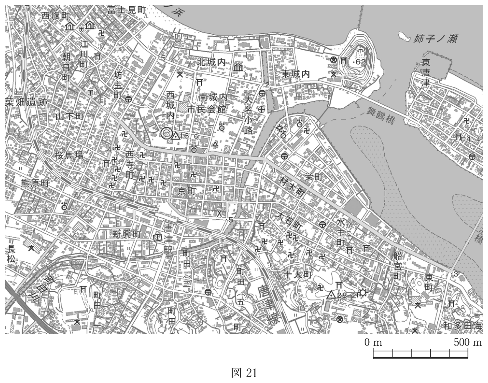
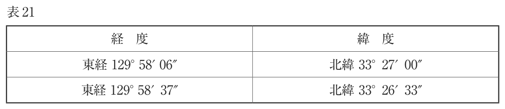
図の出典：国土地理院「電子地形図25000」（測量士補試験の問題に掲載されたもの）
- 東経129°57′49″ 北緯33°27′08″
- 東経129°58′02″ 北緯33°26′43″
- 東経129°58′14″ 北緯33°26′59″
- 東経129°58′18″ 北緯33°27′12″
- 東経129°58′27″ 北緯33°27′02″
答えと解説
答え 4
図 21 の中から地図記号を探します。三角点は三角形の中に点、博物館は屋根と柱のある建物の形です。図の右へ行くほど経度が大きく、上へ行くほど緯度が大きくなります。
表 21 には、どちらの三角点の値かが書かれていません。経度が小さく緯度が大きい 58′06″・27′00″ が左上の三角点①、58′37″・26′33″ が右下の三角点②です。定規で測った長さの比で、博物館の位置を割り出します。
緯度の差 27′00″ − 26′33″ ＝ 27″ （図の上で縦 48.3 mm）
博物館は、三角点①から東へ 19.0 mm、北へ 21.1 mm です。
緯度 27″ × 21.1 ÷ 48.3 ≒ 11.8″ → 27′00″ ＋ 11.8″ ＝ 27′11.8″
最も近いのは、東経 129°58′18″、北緯 33°27′12″（選択肢 4）です。
図の出典：国土地理院「電子地形図25000」（測量士補試験の問題に掲載されたもの）。赤・青の線と文字は当サイトが書き足しました
No.25応用
道路工事のため，ある路線の横断測量を行った。図25－1は得られた横断面図のうち，隣接するNo.5～No.7の横断面図であり，その断面における切土部の断面積（C.A）及び盛土部の断面積（B.A）を示したものである。中心杭間の距離を20 mとすると，No.5～No.7の区間における盛土量と切土量の差は幾らか。式25に示した平均断面法により求め，最も近いものを次の中から選べ。
ただし，図25－2は，式25に示したS1，S2（両端の断面積）及びL（両端断面間の距離）を模式的に示したものである。
なお，関数の値が必要な場合は，巻末の関数表を使用すること。
V＝(S1＋S2)/2×L ……式25（V：両端断面区間の体積，S1，S2：両端の断面積，L：両端断面間の距離）
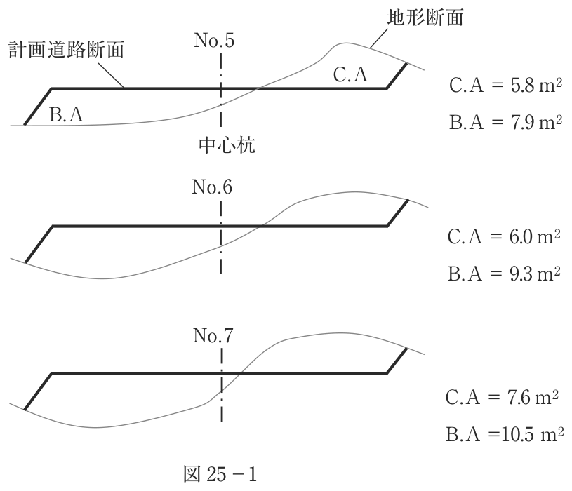
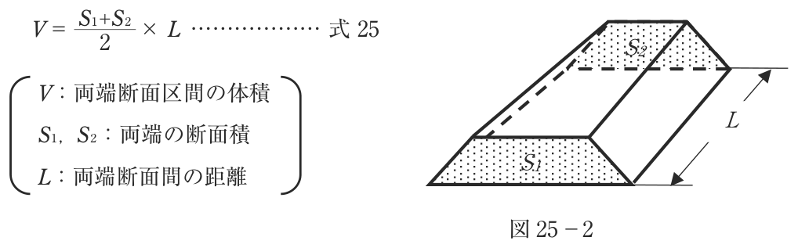
- 105 m³
- 116 m³
- 170 m³
- 178 m³
- 270 m³
答えと解説
答え 2
切土は道路より高い土を削る部分、盛土は低い所に土を盛る部分です。平均断面法は「両端の断面積の平均 × 距離」。No.5〜No.6 と No.6〜No.7 の 2 区間に分けて計算します。
盛土 No.6〜No.7 (9.3 ＋ 10.5) ÷ 2 × 20 ＝ 9.9 × 20 ＝ 198 m³
盛土の合計 ＝ 172 ＋ 198 ＝ 370 m³
切土 No.6〜No.7 (6.0 ＋ 7.6) ÷ 2 × 20 ＝ 6.8 × 20 ＝ 136 m³
切土の合計 ＝ 118 ＋ 136 ＝ 254 m³
No.26応用
図26に模式的に示すように，円曲線始点Ａ，円曲線終点Ｂからなる円曲線の道路建設を計画している。交点IP（Ａ及びＢにおける円曲線の接線が交差する地点）の位置に川が流れており杭を設置できないため，ＡとIPを結ぶ接線上に補助点Ｃ，ＢとIPを結ぶ接線上に補助点Ｄをそれぞれ設置し観測を行ったところ，α＝145°，β＝95°であった。曲線半径R＝280 mとするとき，円曲線始点Ａから円曲線終点Ｂまでの路線長は幾らか。最も近いものを次の中から選べ。
ただし，円周率π＝3.142とする。
なお，関数の値が必要な場合は，巻末の関数表を使用すること。
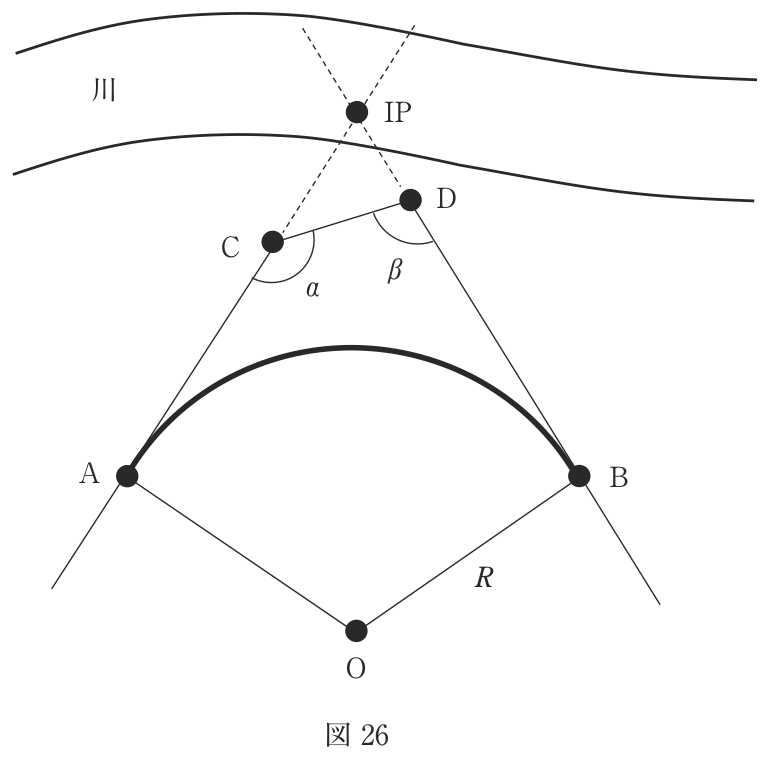
- 521 m
- 542 m
- 565 m
- 587 m
- 599 m
答えと解説
答え 4
IP に杭を打てないので、三角形 C・IP・D の角から交角 I を出します。
D の内角 ＝ 180° − 95° ＝ 85°
交角 I ＝ 35° ＋ 85° ＝ 120°
交角は IP で道路の向きが変わる角で、三角形の IP の外角にあたるので、残り 2 つの内角の和です（IP の内角 60° を 180° から引いても同じ）。円曲線の中心角は交角に等しいので
No.27応用
図27のように道路と隣接した土地に新たに境界を引き，土地ABCDEを同じ面積の長方形ABGFに整正したい。近傍の基準点に基づき，境界点Ａ，Ｂ，Ｃ，Ｄ，Ｅを測定して平面直角座標系（平成14年国土交通省告示第９号）に基づく座標値を求めたところ，表27に示す結果を得た。境界点ＧのY座標値は幾らか。最も近いものを次の中から選べ。
なお，関数の値が必要な場合は，巻末の関数表を使用すること。
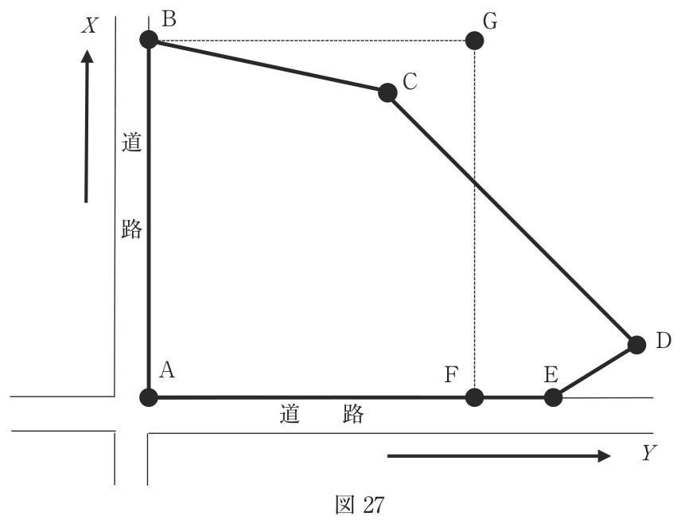
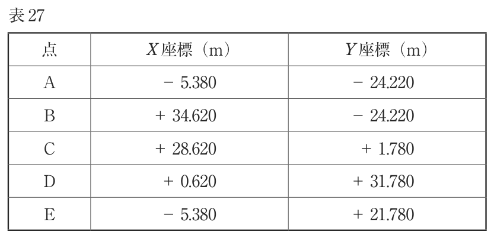
- ＋14.080 m
- ＋14.920 m
- ＋32.080 m
- ＋38.300 m
- ＋62.520 m
答えと解説
答え 1
X は北（上）、Y は東（右）です。A と B は Y が同じなので AB は南北の線、A と E は X が同じなので AE は東西の線です。C と D から AE の線に垂線を下ろし、台形 2 つに分けて面積を出します。D のほうは E より東にはみ出すので、最後に③の三角形を引きます。
D の高さ（AE の線から） ＝ 0.620 − (−5.380) ＝ 6 m
AB から C まで ＝ 1.780 − (−24.220) ＝ 26 m C から D まで（横） ＝ 31.780 − 1.780 ＝ 30 m
E から D まで（横） ＝ 31.780 − 21.780 ＝ 10 m
② ＝ (34 ＋ 6) × 30 ÷ 2 ＝ 600 m²
③ ＝ 10 × 6 ÷ 2 ＝ 30 m²
土地 ABCDE ＝ 962 ＋ 600 − 30 ＝ 1,532 m²
長方形 ABGF は同じ面積で、縦が AB の 40 m です。横 AF を出せば、G の Y 座標は B の Y 座標に AF を足した値です。
G の Y 座標 ＝ −24.220 ＋ 38.300 ＝ ＋14.080 m